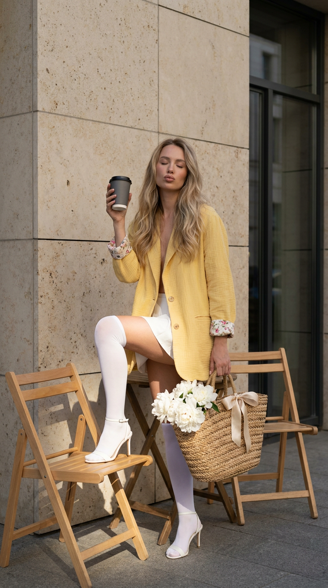
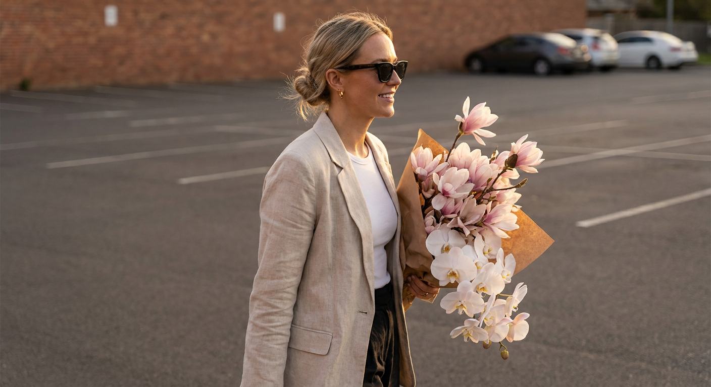
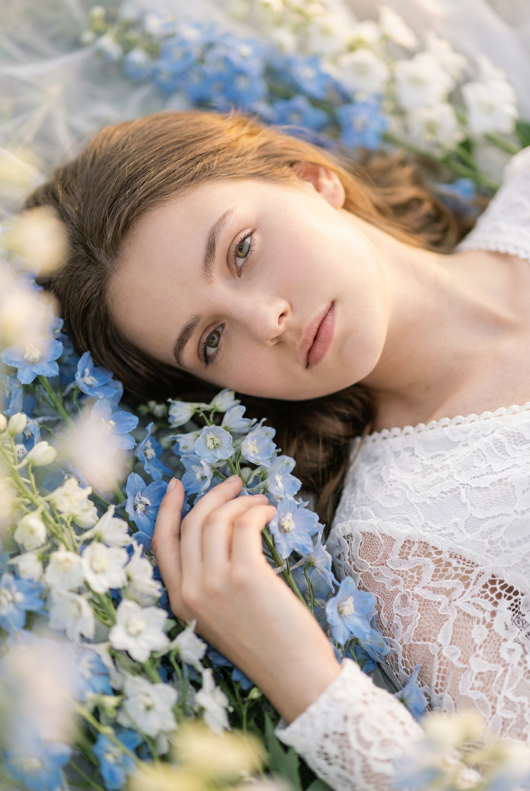
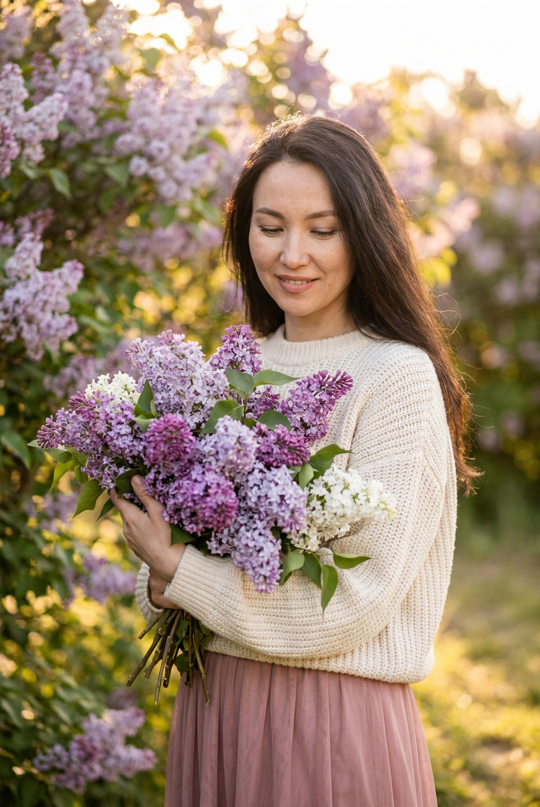
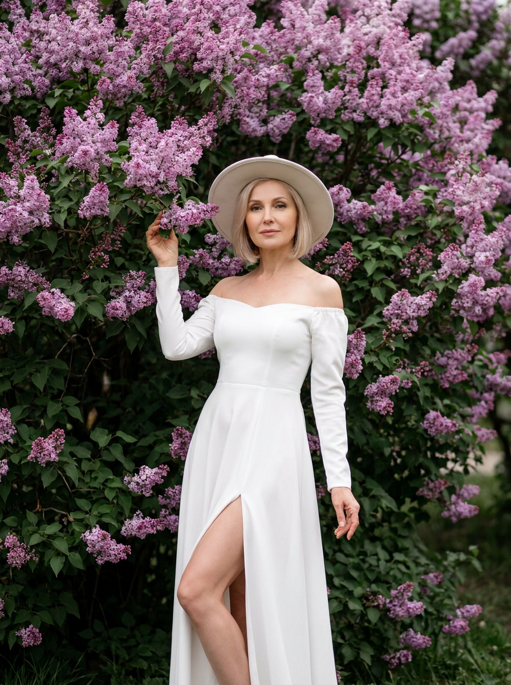
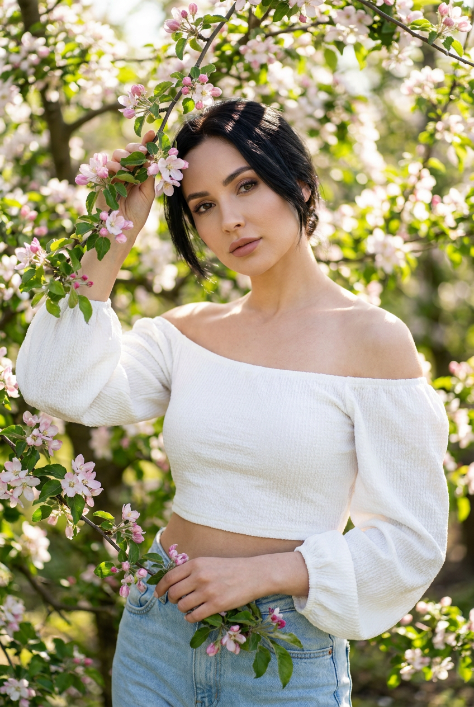
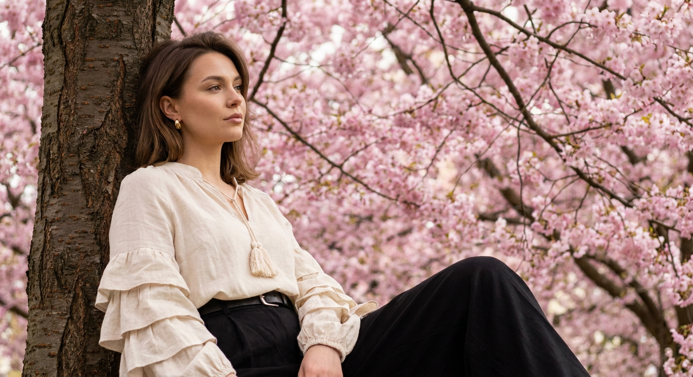
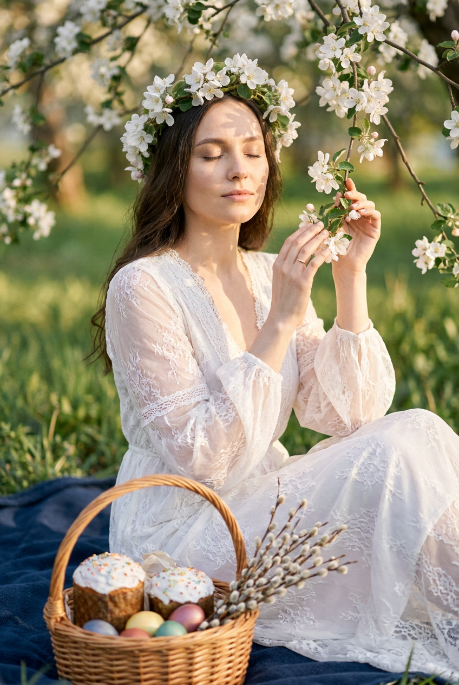
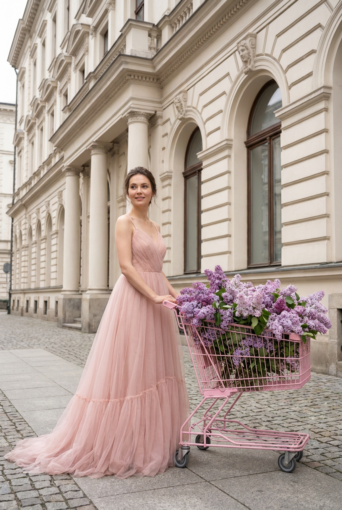
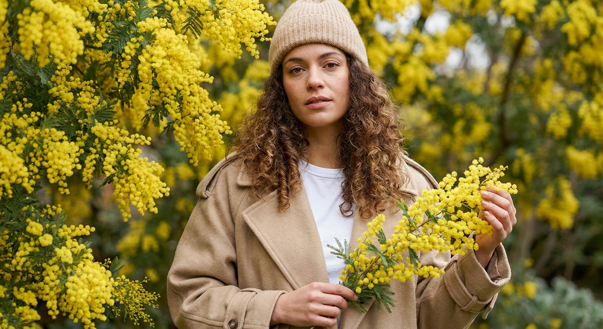

Весенняя ИИ-фотосессия: 10 промптов для нейросети

Весенние снимки часто требуют удачной погоды, красивого цветущего места и нескольких часов на подбор образа. Генерация помогает собрать нужную сцену за несколько попыток и сохранить узнаваемую внешность по референсу.
В подборке — 10 сценариев для портретов и fashion-кадров: от террасы кафе и парковки на закате до сиреневого сада, поля дельфиниумов, яблони, сакуры и яркой мимозы.
Как сгенерировать такое фото: пошагово
Нужен снимок анфас при ровном свете, лицо в кадре целиком, без тёмных очков и головных уборов. Разрешение от 1000 пикселей по короткой стороне. Чем чётче исходник, тем точнее модель повторит черты.
Выберите сценарий ниже и нажмите «Копировать» — текст уйдёт в буфер целиком, вместе с командой сохранения внешности. Эта команда стоит первой строкой и отвечает за то, чтобы на выходе было ваше лицо, а не случайное.
Кнопка «Сгенерировать» рядом с каждым промптом открывает модель в новой вкладке. Nano Banana Pro работает с референсом лица — в отличие от моделей, которые генерируют портрет с нуля и узнаваемость теряют.
Промпт — в поле ввода, портрет — через загрузку референса. Порядок значения не имеет, но без референса команда сохранения внешности работать не будет: модели нечего сохранять.
Для сторис и ленты берите 9:16, для превью и обложек — 4:3. Первый результат редко идеален: если поза или свет ушли не туда, поправьте соответствующую часть промпта и запустите заново. Обычно хватает двух-трёх итераций.
10 промптов для генерации
1. Терраса кафе в тени
Строго сохранить внешность по загруженному референсу: черты лица, пропорции, мимику и текстуру кожи без изменений. Вертикальная фотография 9:16, ультрареалистичный editorial-кадр на открытом воздухе, разрешение 8K. Сцена снята на настоящей террасе уличного кафе у минималистичной стены из крупных бежевых прямоугольных каменных плит: видны аккуратные швы и лёгкая минеральная крапчатая фактура. У правого края оставь тёмную вертикальную стеклянную дверь или окно. В кадре стоят два лёгких деревянных складных стула: один расположен прямо под приподнятой ногой модели, второй — немного позади. Не добавляй вывески, декор, посуду или посторонние предметы, фон должен выглядеть как реальная внешняя стена здания. Девушка полностью находится в мягкой тени: лицо, торс, пиджак и верх тела не освещены прямыми лучами. Солнце попадает только на сиденье деревянного стула. Сохрани внешность по референсу без изменения черт, искажений и ретуши; кожа натуральная, с видимыми порами и лёгким пушком.
2. Букет на парковке

Строго сохранить внешность по загруженному референсу: черты лица, пропорции, мимику и текстуру кожи без изменений. Фотореалистичный вертикальный fashion-снимок девушки, идущей вдоль пустой парковки. Она держит перед собой большой букет нежно-розовых магнолий и белых орхидей, завернутый в коричневую крафтовую бумагу. На девушке светлый льняной жакет делового кроя, тёмные солнцезащитные очки и лаконичные серьги; волосы собраны в небрежный пучок. Композиция должна передавать движение шага, но сохранять спокойное, элегантное настроение. Мягкий естественный свет тёплого закатного солнца, приглушённые бежевые, коричневые и белые оттенки с заметным розовым акцентом в цветах. На заднем плане — нейтральное пространство парковки и размытая кирпичная стена без лишних деталей. Фокус на девушке, фактуре льна, бумажной упаковке и лепестках; высокая детализация, реалистичные пропорции, естественная кожа, утончённая editorial-эстетика. Лицо и индивидуальные черты должны точно соответствовать загруженному референсу.
3. В поле дельфиниумов

Строго сохранить внешность по загруженному референсу: черты лица, пропорции, мимику и текстуру кожи без изменений. Сделай крупный фотореалистичный портрет молодой женщины, лежащей среди нежных голубых и белых дельфиниумов. Камера расположена сверху под мягким углом, вертикальный формат 2:3, объектив 85 мм, диафрагма f/1.8. Девушка одета в кружевное белое платье, одна рука осторожно касается цветков. Она смотрит прямо в объектив, выражение лица спокойное, макияж естественный, волосы распущены. Настроение воздушное, романтичное и мечтательное, с мягким золотистым светом заката либо рассеянным дневным освещением. Используй пастельную палитру, малую глубину резкости и красивое боке среди цветов на переднем и заднем плане. Глаза должны быть резкими, кожа — натуральной и детализированной, кружево и лепестки — с правдоподобной фактурой. Стиль: cinematic editorial fashion photography, ultra realistic, high detail. Сохрани лицо с референса без изменений.
4. Пышный букет сирени

Строго сохранить внешность по загруженному референсу: черты лица, пропорции, мимику и текстуру кожи без изменений. Уличный фотореалистичный женский портрет в цветущем саду. Девушка стоит в полуобороте, корпус слегка развёрнут в сторону, голова мягко наклонена к огромному букету в руках. Взгляд опущен, глаза почти закрыты, выражение нежное, умиротворённое и мечтательное. Букет занимает передний план и частично закрывает фигуру: он должен быть очень объёмным, густым и натуральным, собранным из множества кистей сирени светло-фиолетового, лавандового, сиреневого, насыщенно-пурпурного и белого оттенков. Покажи отдельные мелкие цветки, живые стебли и естественную зелень. Фон — сад с цветущей сиренью, мягко размытый, свет рассеянный дневной, без жёстких теней. Съёмка в эстетике editorial, натуральная кожа, реалистичная анатомия, высокая детализация, нежная весенняя палитра. Используй загруженное фото как точный референс лица: не меняй форму глаз, носа, губ, овал, подбородок, возраст, цвет и длину волос.
5. Белое платье у сирени

Строго сохранить внешность по загруженному референсу: черты лица, пропорции, мимику и текстуру кожи без изменений. Вертикальная fashion-фотография 3:4, девушка в полный рост стоит перед огромным кустом цветущей сирени. Весь фон заполнен пышными лилово-розовыми соцветиями и тёмной зеленью, задний план слегка размыт. На модели длинное белое платье в пол с высоким разрезом, открытыми плечами и длинными рукавами, на голове широкополая светлая шляпа. Одна рука поднята и легко касается ветки сирени, вторая свободно опущена вдоль тела; одна нога выставлена вперёд, поза женственная и изысканная. Мягкий естественный дневной свет, романтичное весеннее настроение, editorial fashion, cinematic, ultra realistic. Используй объектив 85 мм и малую глубину резкости. Кожа натуральная, пропорции тела естественные, лепестки детализированные. Сохрани лицо по референсу: форму глаз, носа, губ, овал и возраст. Негативный промпт: другое или искажённое лицо, лишние пальцы, деформированные кисти, неправильная анатомия, пластиковая кожа, лишние конечности, размытие лица, текст, логотипы.
6. Ветка яблони у лица

Строго сохранить внешность по загруженному референсу: черты лица, пропорции, мимику и текстуру кожи без изменений. Яркая фотореалистичная летняя фотография в вертикальном формате: девушка стоит в густом цветущем саду среди ветвей яблони с розовыми цветами. Цветущие ветки и зелёные листья окружают модель со всех сторон и образуют плотную природную рамку. Поза в три четверти, корпус слегка повёрнут, голова немного наклонена, взгляд прямо в камеру, выражение лица расслабленное и красивое. Левая рука поднята и держит ветку рядом с головой, вторая опущена и удерживает другую ветвь на уровне бедра. Одежда: белый кроп-топ с открытыми плечами, объёмными рукавами и фактурной тканью, светлые голубые джинсы. Свет естественный, мягкий, цвета яркие, но реалистичные; покажи текстуру цветов, листьев, одежды и волос. Не меняй внешность по загруженному фото: сохрани форму лица, разрез глаз, нос, губы, брови, макияж, мимику, причёску, длину и цвет волос. Реалистичные руки, пальцы и пропорции, высокая детализация, мягкое размытие дальнего фона.
7. Сакура и льняная блуза

Строго сохранить внешность по загруженному референсу: черты лица, пропорции, мимику и текстуру кожи без изменений. Фотореалистичный уличный портрет женщины, которая расслабленно прислонилась к стволу дерева и смотрит влево. Выражение задумчивое, спокойное; мягкий рассеянный дневной свет подчёркивает объём лица и естественные черты. На ней кремовая льняная блуза оверсайз с V-образным вырезом, декоративной кисточкой и пышными рюшами на рукавах, чёрные широкие брюки с ремнём. Макияж натуральный: матовая кожа с лёгким сиянием, чёрная тушь, блеск на губах; в ухе небольшая золотая серьга. Волосы с умеренным объёмом и боковым пробором мягко обрамляют лицо. На заднем плане — пышные розовые цветы сакуры и переплетённые ветви, формирующие романтичную живописную рамку. Палитра тёплая и натуральная, стиль бохо, эстетический портрет, мягкий фокус. Съёмка на объектив 50 мм в портретном режиме, малая глубина резкости, естественная фактура кожи и ткани. Лицо должно соответствовать референсу.
8. Пасхальный пикник под яблоней

Строго сохранить внешность по загруженному референсу: черты лица, пропорции, мимику и текстуру кожи без изменений. Вертикальный фотореалистичный портрет женщины в лёгком белом кружевном платье с летящими рукавами. Она сидит под цветущей яблоней на тёмно-синем пледе, на голове венок из яблоневых цветов. Глаза закрыты, выражение лица спокойное и блаженное; одной рукой девушка мягко касается ветки с цветами. На переднем плане поставь плетёную корзину с пасхальными куличами, крашеными яйцами и веточками вербы. Свет мягкий, золотистый и рассеянный, на лице видны нежные пятна солнечного света и тени. Используй пастельную палитру, натуральный оттенок кожи, малую глубину резкости и мягкое боке. Параметры съёмки: объектив 85 мм, f/1.8, ISO 100, выдержка 1/250 с, высокое разрешение, тонкая плёночная зернистость. Формат кадра 16:9. Цветы, кружево, плед и праздничные детали должны выглядеть материальными и реалистичными; лицо сохранить по загруженному референсу.
9. Розовая тележка с сиренью

Строго сохранить внешность по загруженному референсу: черты лица, пропорции, мимику и текстуру кожи без изменений. Фотореалистичная fashion-editorial сцена на улице у красивого исторического здания. Женщина позирует рядом с розовой металлической тележкой для покупок, полностью заполненной свежей пышной сиренью нежно-фиолетового и лилового оттенков. Цветы объёмные, с реалистичной текстурой лепестков, зелёными листьями и естественными стеблями. Тележка стоит на тротуаре, её розовый цвет перекликается с одеждой и создаёт романтичный акцент. На женщине длинное воздушное платье в пол из лёгкой полупрозрачной ткани нежно-розового, пудрового или blush pink оттенка; ткань струится по земле и образует мягкий объёмный шлейф. Верх платья — на тонких бретелях с деликатной отделкой. Сцена светлая, элегантная, с натуральной кожей и мягким рассеянным светом. Исторический фасад остаётся узнаваемым, но слегка уходит в фон. Сохрани индивидуальность лица по референсу: глаза, нос, губы, подбородок, линию челюсти, мимику и узнаваемость; не меняй возраст и пропорции.
10. Портрет среди мимозы

Строго сохранить внешность по загруженному референсу: черты лица, пропорции, мимику и текстуру кожи без изменений. Крупный фотореалистичный портрет девушки по грудь в саду или парке, окружённой ярко-жёлтыми ветками мимозы. Пышные гроздья пушистых цветов и зелёные листья формируют плотную рамку вокруг лица и верхней части тела; ближайшие цветы вместе с моделью находятся в фокусе, дальний фон мягко размыт. Девушка держит в руках несколько веточек мимозы. У неё длинные объёмные вьющиеся волосы, свободно спадающие на плечи. Одежда современная и лаконичная: объёмное пальто или тренч молочного либо бежевого оттенка свободного кроя, под ним простая белая футболка или лёгкий свитер. На голове вязаная шапка, берет или стильная кепка, образ дополнен минималистичными украшениями. Свет мягкий, естественный, подчёркивает насыщенность жёлтых цветов, текстуру волос и ткани. Эффект макросъёмки, малая глубина резкости, натуральные цвета кожи, высокая детализация, реалистичные лепестки и листья. Используй лицо с загруженного фото без изменения черт.
Что важно учесть в этом стиле
Весенняя фотосессия держится на правдоподобном свете и понятной фактуре. Если в сцене есть солнце, уточняйте, куда именно падают лучи: например, только на сиденье стула, а не на лицо модели. Так нейросеть реже смешивает тени и пересветы.
Для узнаваемого лица лучше описывать не только референс, но и запреты: не менять возраст, форму глаз, носа, губ, овал, волосы и мимику. В цветочных сценах отдельно фиксируйте масштаб букета, положение рук и тип размытия — именно эти детали чаще всего искажаются.
Идеи для вариаций
- Замените сирень на пионы, глицинию или цветущую вишню.
- Перенесите съёмку из сада на старую городскую улицу или в оранжерею.
- Поменяйте закатный свет на пасмурное утро с холодной палитрой.
- Добавьте плетёную сумку, винтажный велосипед или прозрачный зонт.
- Попробуйте съёмку с другого расстояния: 35 мм для окружения и 105 мм для крупного портрета.
- Сделайте серию из трёх кадров: взгляд в камеру, профиль и движение в полный рост.
Как собрать свой промпт
Начните с формата и типа кадра: портрет по грудь, полный рост или съёмка сверху. Затем задайте локацию, положение тела, взгляд, руки и одежду. После этого добавьте цветы, время суток и конкретную физику света.
В финале укажите объектив, диафрагму, глубину резкости и требования к фактуре. Для стабильного результата меняйте за один раз только одну деталь и делайте 3–5 генераций. Если лицо или руки искажаются, сократите декоративные описания и вынесите нежелательные элементы в негативный промпт.
Ошибки, из-за которых кадр не получается
- Слишком много объектов. Лишний декор перетягивает внимание и разрушает композицию.
- Противоречивый свет. Не сочетайте жёсткое солнце на лице с полностью рассеянной тенью без пояснения.
- Размытая поза. Указывайте, какая рука держит ветку и куда направлен взгляд.
- Нет ограничений для лица. Без запрета на смену возраста и черт референс может превратиться в другого персонажа.
- Неподходящий формат. Вертикальный портрет 2:3 и горизонтальный кадр 16:9 требуют разной композиции.
- Перегруженный негативный промпт. Длинный список запретов иногда удаляет нужные детали вместе с ошибками.
Частые вопросы
Как сделать такое ИИ-фото бесплатно?
Попробуйте Kandinsky или Шедеврум: они подходят для генерации по тексту, но точность лица и работа с загруженным референсом могут быть нестабильными. В Krea AI и Arena.ai доступны удобные режимы для экспериментов, однако бесплатные лимиты, доступные модели и функции меняются. Для узнаваемого портрета обычно требуется несколько попыток и аккуратная настройка силы референса.
Как сохранить лицо по фотографии?
Загрузите чёткий референс анфас или в близком к будущему кадру ракурсе. В промпте отдельно зафиксируйте форму глаз, носа, губ, овал лица, возраст, волосы и мимику. Не перегружайте описание макияжем и аксессуарами, а силу влияния референса подбирайте постепенно.
Почему нейросеть искажает руки и цветы?
Кисти и мелкие лепестки относятся к сложным деталям, особенно когда рука держит ветку или букет закрывает часть тела. Опишите положение каждой руки, число видимых пальцев и расположение цветов. Помогают также 3–5 повторных генераций, более простой фон и последующая локальная правка.
Какой формат выбрать для весеннего портрета?
Для публикации в сторис и вертикальной ленты подойдут 9:16 или 2:3. Формат 3:4 удобен для портрета в полный рост, а 16:9 — для сцены с пледом, деревом или широкой локацией. Указывайте формат в самом начале промпта и заранее решайте, где оставить свободное место.